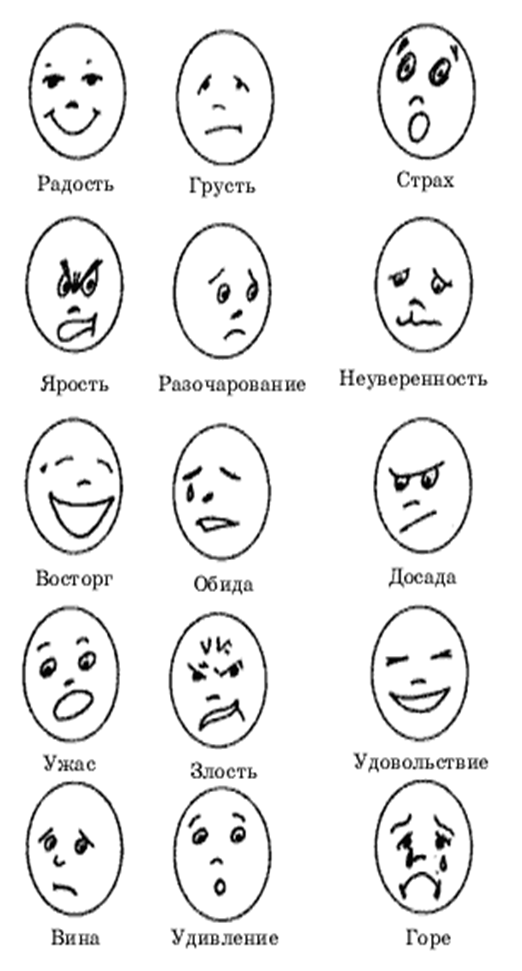
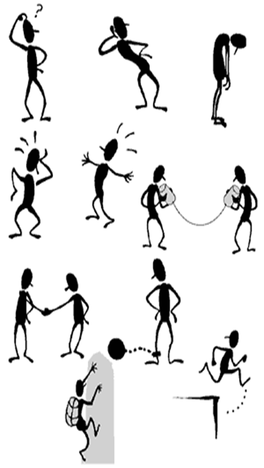

Как вы думаете, почему дети дерутся, кусаются и толкаются, а иногда в ответ на какое-либо, даже доброжелательное, обращение «взрываются» и бушуют?
Причин такого поведения может быть много. Но часто дети поступают именно так потому, что не знают, как поступить иначе. К сожалению, их поведенческий репертуар довольно скуден, и если мы предоставим им возможность выбора способов поведения, дети с удовольствием откликнутся на предложение, и наше общение с ними станет более эффективным и приятным для обеих сторон.
Этот совет (предоставление выбора способа взаимодействия) особенно актуален, когда речь идет об агрессивных детях. Работа воспитателей с данной категорией детей должна проводиться в трех направлениях:
1. Работа с гневом. Обучение агрессивных детей приемлемым способам выражения гнева.
2. Обучение детей навыкам распознавания и контроля, умению владеть собой в ситуациях, провоцирующих вспышки гнева.
3. Формирование способности к эмпатии, доверию, сочувствию, сопереживанию и т.д.
Что такое гнев? Это чувство сильного негодования, которое сопровождается потерей контроля над собой. К сожалению, в нашей культуре принято считать, что проявление гнева — недостойная реакция. Уже в детском возрасте нам внушают эту мысль взрослые — родители, бабушки, дедушки, педагоги. Однако психологи не рекомендуют каждый раз сдерживать эту эмоцию, поскольку таким образом мы можем стать своеобразной «копилкой гнева». Кроме того, загнав гнев внутрь, человек скорее всего рано или поздно все же почувствует необходимость выплеснуть его. Но уже не на того, кто вызвал это чувство, а на «подвернувшегося под руку» или на того, кто слабее и не сможет дать отпор. Даже если мы очень постараемся и не поддадимся соблазнительному способу «извержения» гнева, наша «копилка», пополняясь день ото дня новыми негативными эмоциями, в один прекрасный день все же может «лопнуть». Причем не обязательно это завершится истерикой и криками. Вырвавшиеся на свободу негативные чувства могут «осесть» внутри нас, что приведет к различным соматическим проблемам: головным болям, желудочным и сердечно-сосудистым заболеваниям. Человек, постоянно подавляющий свой гнев, более подвержен риску психосоматических расстройств. Именно поэтому от гнева необходимо освобождаться. Конечно, это не означает, что всем дозволено драться и кусаться. Просто мы должны научиться сами и научить детей выражать гнев приемлемыми, неразрушительными способами.
Поскольку чувство гнева чаще всего возникает в результате ограничения свободы, то в момент наивысшего «накала страстей» необходимо разрешить ребенку сделать что-то, что, может быть, обычно и не приветствуется нами. Например, в ситуации, когда ребенок рассердился на сверстника и обзывает его, можно вместе с ним нарисовать обидчика, изобразить его в том виде и в той ситуации, в которой хочется «оскорбленному». Если ребенок умеет писать, можно позволить ему подписать рисунок так, как он хочет, если не умеет — сделать подпись под его диктовку. Безусловно, подобная работа должна проводиться один на один с ребенком, вне поля зрения соперника. После этого дети дошкольного возраста обычно испытывают облегчение.
Хорошийспособ помочь детям легально выразить вербальную агрессию — поиграть с ними в игру
Помочь детям доступным способом выразить гнев, а педагогу — беспрепятственно провести занятие может так называемый «Мешочек для криков» (в других случаях — «Стаканчик для криков», «Волшебная труба “Крик”» и др.). Перед началом урока каждый желающий ребенок может подойти к «Мешочку для криков» и как можно громче покричать в него. Таким образом он «избавляется» от своего крика на время занятия. После занятия дети могут «забрать» свой крик обратно. Обычно в конце занятия дети с шутками и смехом оставляют содержимое «Мешочка» на
память.
Очень часто импульсивные дети сначала пускают в ход кулаки, а уж потом придумывают обидные слова. В таких случаях нам также следует научить детей справляться со своей физической агрессией. Тогда воспитатель может организовать, к примеру, спортивные соревнования по бегу, прыжкам, метанию мячей. Причем обидчики могут быть включены в одну команду или находиться в командах-соперницах. Это зависит от ситуации и от глубины конфликта. По завершении соревнований лучше всего провести групповое обсуждение, во время которого каждый ребенок сможет выразить чувства, сопутствующие ему при выполнении задания.
Конечно, проведение соревнований и эстафет не всегда целесообразно. В таком случае можно воспользоваться подручными средствами, которыми необходимо оборудовать каждую группу детского сада. Легкие мячики, которые ребенок может швырять в мишень; мягкие подушки, которые разгневанный ребенок может пинать, колотить, резиновые молотки, которыми можно со всей силы бить по стене и по полу; газеты, которые можно комкать и швырять, не боясь что-либо разбить и разрушить, — все эти предметы могут способствовать снижению эмоционального и мышечного напряжения, если мы научим детей пользоваться ими в экстремальных ситуациях.
Следующим очень ответственным и не менее важным направлением является обучение навыкам распознавания и контроля негативных эмоций. Далеко не всегда агрессивный ребенок признается, что он агрессивен. Более того, в глубине души он уверен в обратном: это все вокруг агрессивны. К сожалению, такие дети не всегда могут адекватно оценить свое состояние, а тем более состояние окружающих.
Как уже отмечалось выше, эмоциональный мир агрессивных детей очень скуден. Они с трудом могут назвать всего лишь несколько основных эмоциональных состояний, а о существовании других (или их оттенков) они даже не предполагают. Нетрудно догадаться, что в этом случае детям сложно распознать свои и чужие эмоции.
Для тренировки навыка распознавания эмоциональных состояний можно использовать разрезные шаблоны, этюды, упражнения и игры, а также большие таблицы и плакаты с изображением различных эмоциональных состояний. В группе, где находится такой плакат, дети обязательно перед началом занятий подойдут к нему и укажут свое состояние, даже если педагог не просит их об этом, так как каждому из них приятно обратить внимание взрослого на себя.
Можно научить детей проводить обратную процедуру: самим придумывать названия эмоциональных состояний, изображенных на плакате. Дети должны указать, в каком настроении находятся забавные человечки.
Еще один способ научить ребенка понимать свое эмоциональное состояние и развить потребность говорить о нем — рисование. Детей можно попросить сделать рисунки на темы: «Когда я сержусь», «Когда я радуюсь», «Когда я счастлив» и т.д. С этой целью разместите на мольберте (или просто на большом листе на стене) заранее нарисованные фигурки людей, изображенных в различных ситуациях, но без прорисованных лиц. Тогда ребенок сможет при желании подойти и завершить рисунок.
Для того чтобы дети могли верно оценивать свое состояние, а в нужный момент и управлять им, необходимо научить каждого ребенка понимать себя, и прежде всего — ощущение своего тела. Сначала можно потренироваться перед зеркалом: пусть ребенок скажет, какое настроение у него в данный момент и что он чувствует. Дети очень чутко воспринимают сигналы своего тела и с легкостью описывают их. Например, если ребенок злится, он чаще всего определяет свое состояние так: «Сердце колотится, в животе щекотно, в горле кричать хочется, в пальцах на руках как будто иголки колют, щекам горячо, ладошки чешутся и т.д.».
Таким образом, ребенок, если он верно «расшифрует» послание своего тела, сам сможет понять: «Мое состояние близко к критическому. Жди бури». А если ребенок к тому же знает несколько приемлемых способов выплескивания гнева, он может успеть принять правильное решение, тем самым предотвратив конфликт.
Конечно, обучение ребенка распознаванию своего эмоционального состояния и управлению им будет успешным лишь в том случае, если она будет проводиться систематически, изо дня в день, в течение довольно длительного времени.
Кроме уже описанных способов работы, педагог может использовать и другие: проводить беседы с ребенком, рисовать и, конечно же, играть.
 Какое настроение у этих человечков?
Агрессивные дети, как правило, имеют низкий уровень эмпатии. Эмпатия — это способность чувствовать состояние другого человека, умение вставать на его позицию. Агрессивных же детей чаще всего не волнуют страдания окружающих, они даже представить себе не могут, что другим людям может быть неприятно и плохо. Считается, что если агрессор сможет посочувствовать «жертве», его агрессия в следующий раз будет слабее. Поэтому так важна работа педагога по развитию у ребенка чувства эмпатии.
Одной из форм такой работы может стать ролевая игра, в процессе которой ребенок получает возможность поставить себя на место других, оценить свое поведение со стороны. Например, если в группе произошла ссора или драка, можно в кругу разобрать эту ситуацию, пригласив в гости Котенка, или Тигренка, или любых известных детям литературных героев. На глазах у ребят гости разыгрывают ссору, похожую на ту, которая произошла в группе, а затем просят детей помирить их. Дети предлагают различные способы выхода из конфликта. Можно разделить ребят на две группы, одна из которых говорит от имени Тигренка, другая — от имени Котенка. Можно дать детям возможность самим выбрать, на чью позицию им хотелось бы встать и чьи интересы защищать. Какую бы конкретную форму проведения ролевой игры вы ни выбрали, важно, что в конечном итоге дети приобретут умение вставать на позицию другого человека, распознавать его чувства и переживания, научатся тому, как вести себя в сложных жизненных ситуациях. Общее обсуждение проблемы будет способствовать сплочению детского коллектива и установлению благоприятного психологического климата в группе.
Во время подобных обсуждений можно разыгрывать и другие ситуации, которые чаще всего вызывают конфликты в коллективе: как реагировать, если товарищ не отдает нужную тебе игрушку, что делать, если тебя дразнят, как поступить, если тебя толкнули и ты упал, и др. Целенаправленная и терпеливая работа в этом направлении поможет ребенку с большим пониманием относиться к чувствам и поступкам других и научиться самому адекватно относиться к происходящему.
Кроме того, можно предложить детям организовать театр, попросив их разыграть определенные ситуации, например: «Как Мальвина поссорилась с Буратино». Однако, прежде чем показать какую-либо сценку, дети должны обсудить, почему герои сказки повели себя тем или иным образом. Необходимо, чтобы они попытались поставить себя на место сказочных персонажей и ответить на вопросы: «Что чувствовал Буратино, когда Мальвина посадила его в чулан?», «Что чувствовала Мальвина, когда ей пришлось наказать Буратино?» и др.
Подобные беседы помогут детям осознать, как важно побыть на месте соперника или обидчика, чтобы понять, почему он поступил именно так, а не иначе. Научившись сопереживать окружающим людям, агрессивный ребенок сможет избавиться от подозрительности и мнительности, которые доставляют так много неприятностей и самому «агрессору», и тем, кто находится с ним рядом. А как следствие — научится брать на себя ответственность за совершенные им действия, а не сваливать вину на других.
Правда, взрослым, работающим с агрессивным ребенком, тоже не помешает избавиться от привычки обвинять его во всех смертных грехах. Например, если ребенок швыряет в гневе игрушки, можно, конечно, сказать ему: «Ты — негодник! От тебя одни проблемы. Ты всегда мешаешь всем детям играть!» Но вряд ли такое заявление снизит эмоциональное напряжение «негодника». Наоборот, ребенок, который и так уверен, что он никому не нужен и весь мир настроен против него, обозлится еще больше. В таком случае гораздо полезнее сказать ребенку о своих чувствах, используя при этом местоимение «я», а не «ты». Например, вместо «Ты почему не убрал игрушки?» можно сказать: «Я расстраиваюсь, когда игрушки разбросаны».
Таким образом, вы ни в чем не обвиняете ребенка, не угрожаете ему, даже не даете оценки его поведению. Вы говорите о себе, о своих ощущениях. Как правило, такая реакция взрослого сначала шокирует ребенка, ожидающего града упреков в свой адрес, а затем вызывает у него чувство доверия. Появляется возможность для конструктивного диалога.
Работая с агрессивными детьми, воспитатель должен прежде всего наладить контакт с семьей. Он может либо сам дать рекомендации родителям, либо в тактичной форме предложить им обратиться за помощью к психологам.
Бывают ситуации, когда контакт с матерью или отцом установить не удается. В таких случаях мы рекомендуем использовать наглядную информацию, которую можно разместить в уголке для родителей. Главная цель подобной информации — показать родителям, что одной из причин проявления агрессии у детей может быть агрессивное поведение самих родителей. Если в доме постоянные споры и крики, трудно ожидать, что ребенок вдруг будет покладистым и спокойным. Кроме того, родители должны осознавать, какие последствия тех или иных дисциплинарных воздействий на ребенка ожидают их в ближайшем будущем и тогда, когда ребенок вступит в подростковый возраст.
Как ладить с ребенком, который постоянно ведет себя вызывающе? Полезные рекомендации родителям мы нашли на страницах книги Р.Кэмпбелла «Как справляться с гневом ребенка». Советуем прочитать эту книгу и педагогам, и родителям. Р.Кэмпбелл выделяет пять способов контроля поведения ребенка: два из них — позитивные, два — негативные и один — нейтральный. К позитивным способам относятся просьбы и мягкое физическое манипулирование (например, можно отвлечь ребенка, взять его за руку и отвести и т.д.).
Модификация поведения — нейтральный способ контроля — предполагает использование поощрения (за выполнение определенных правил) и наказания (за их игнорирование). Но данная система не должна использоваться слишком часто, так как впоследствии ребенок начинает делать только то, за что получает награду.
Частые наказания и приказы относятся к негативным способам контролирования поведения ребенка. Они заставляют его чрезмерно подавлять свой гнев, что способствует появлению в характере пассивно-агрессивных черт. Что же такое пассивная агрессия и какие опасности она в себе таит? Это скрытая форма агрессии, ее цель — вывести из себя, расстроить родителей или близких людей, причем ребенок может причинять вред не только окружающим, но и себе. Он начнет специально плохо учиться, в отместку родителям надевать те вещи, которые им не нравятся, будет капризничать на улице безо всякой причины. Главное — вывести родителей из равновесия. Чтобы устранить такие формы поведения, система поощрений и наказаний должна быть продумана в каждой семье. Наказывая ребенка, необходимо помнить, что эта мера воздействия ни в коем случае не должна унижать достоинство сына или дочери. Наказание должно следовать непосредственно за проступком, а не через день, не через неделю. Наказание будет иметь эффект только в том случае, если ребенок сам считает, что заслужил его, кроме того, за один проступок нельзя наказывать дважды.
Существует еще один способ эффективной работы с гневом ребенка, хотя он может быть применен далеко не всегда. Если родители хорошо знают своего сына или дочь, они могут разрядить обстановку во время эмоциональной вспышки ребенка уместной шуткой. Неожиданность подобной реакции и доброжелательный тон взрослого помогут ребенку достойно выйти из затруднительной ситуации.